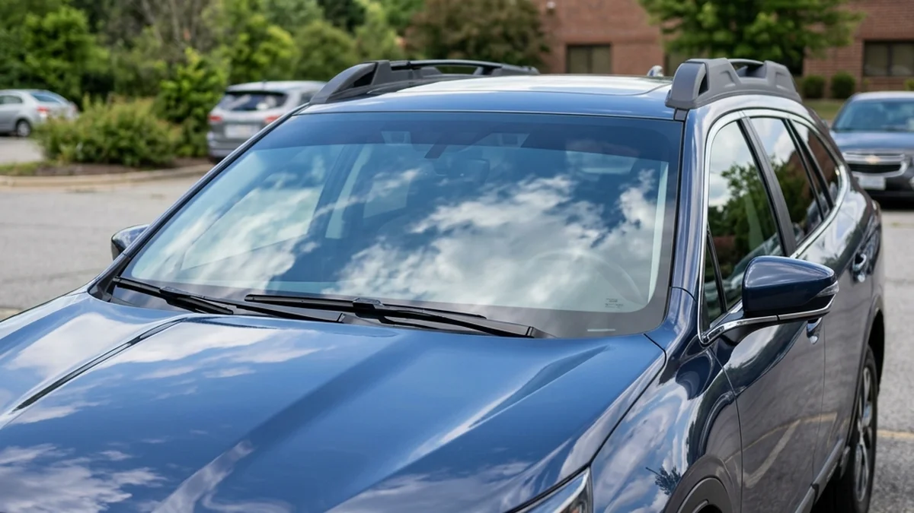

Your vehicle's glass is its most vulnerable point. It lets in blinding glare, damaging UV radiation, and blistering heat. But when you combine high-quality auto glass and tint, you completely transform your vehicle's cabin into a protected, comfortable sanctuary.
Many people view tinting purely as a cosmetic upgrade. They search for "car filming near me" just to make their car look aggressive. But the functional benefits of visiting an auto glass and tint shop go far beyond aesthetics.
Shatter Resistance and Safety
Standard tempered side windows are designed to shatter into thousands of tiny pieces upon impact. While this prevents large, dangerous shards from forming, it still sends glass flying throughout the cabin during an accident.
When you apply premium window film at an expert precision car audio and window tint facility, the thick adhesive layer of the tint holds the shattered glass together in one solid sheet. This crucial feature provides immense shatter resistance, protecting the driver and passengers from flying glass fragments during a collision or an attempted break-in.

Interior Preservation
The Inland Empire sun is ruthless on car interiors. Over time, UV rays will crack leather dashboards, fade expensive upholstery, and degrade plastic trims. High-end window film blocks 99.9% of these damaging ultraviolet rays.
Think of it as SPF 1000 sunscreen for your vehicle's interior. A professional auto glass and tint installation preserves your car's resale value by keeping the cabin looking brand new, even after years of baking in the California sun.
Stop searching endlessly for a "car filming near me" and trust the experts who understand the synergy between automotive glass and premium films. Whether you need glare reduction, heat rejection, or enhanced security, the right tint applied by the right professionals makes all the difference.